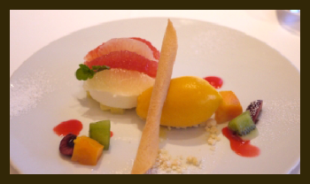

ローストチキン
ローストチキンに使用しているタレは50年受け継がれてきた伝統のタレです。鶏肉は鮮度の一番良い朝引きの水郷どり。本格的なローストチキン料理をご堪能ください。
¥3,700

フルーツ＆アイスクリーム
素材にこだわり厳選した高品質フルーツと濃厚なアイスクリームの優雅な甘さのハーモニー。香り高く芳醇な味わいとリッチな味わいが絶妙に調和した贅沢なデザートです。
¥1,800

赤ワイングラス
十分な糖度と豊かな果実味、主張しすぎない渋味が備わった、魅力的なワイン。繊細な口当たりと熟した果実の風味とともに、穏やかな酸とミネラルが広がっていきます。
¥1,500